Vanderbilt · Anchor's Edge · ATD facilitator guide · print edition
The Practicum, the facilitator guide

Run of show
| Screen | Full (min) | Core (min) |
|---|---|---|
| Welcome / QR | 3 | 2 |
| The mission | 3 | 2 |
| The goal we are targeting | 3 | 2 |
| Objectives | 2 | 1 |
| Agenda | 2 | 1 |
| Set the triads | 8 | 6 |
| Run the rounds | 10 | 7 |
| Debrief the beats | 9 | 6 |
| The core idea | 2 | 1 |
| Recap quiz | 5 | 4 |
| Capstone commitment | 6 | 4 |
| Closing | 2 | 2 |
| Total | 55 | 38 |
The goal this month serves
Goal 2, Manager Effectiveness at Scale.
Audience
Vanderbilt people managers and team leads, in person. Triads need space: tables of six that split into two triads work best, with room noise expected and welcome; navigators float between triads. Works from nine managers upward; every topic is real and every exercise runs roles only, never names.
Room setup
In person, navigator led: projector plus presenter device, tables that pair easily, learners on their own devices via the welcome-slide QR. Nothing typed into the deck is saved or sent.
Materials
- Meeting platform with screen share and breakout rooms; deck link ready to paste in chat
- Facilitator machine with the facilitator edition open; notifications off
- Learners on their own devices with the learner link
- Chat open for share-outs; the capstone copy button pastes there cleanly
A week before
- Run the learner edition start to finish and do every interaction honestly; you will demo at least one live.
- Read this month's theme page on the Anchor's Edge dashboard so the goal tie-in is fluent.
- Send the invite with the learner link and one line on what to bring.
The day before
- Test screen share with the facilitator edition; confirm the notes rail is readable.
- Open the learner link on a second device; the QR must land there.
- Run the section interactions once so you can drive them without reading.
30 minutes before
- Welcome slide up as people join; link pasted in chat.
- Close every other tab; silence the machine.
- Breakout rooms pre-configured in pairs.
When things go sideways
If The projector or room screen fails: The deck lives on learner phones via the welcome QR, and the interactions run there too; narrate from your own device. Triads need chairs, not screens.
If The headcount does not divide into threes: Run one or two pairs with a navigator as their observer, or a four-seat triad with two observers comparing notes; two observers disagreeing is a debrief gift.
If A coachee's topic turns out to be about a named colleague or a live conflict: Protect the room warmly: 'Roles, never names.' Reshape the topic toward the coachee's own next move; if it is genuinely hot, swap in their backup topic and offer a navigator conversation afterward.
If A coach freezes mid-round in front of their observer: Normalize it loudly enough for nearby triads to hear: freezing is the stall showing up on schedule. Feed them one stem, what have you tried, and let the round continue; the recovery is better practice than a smooth round.
Tough questions, ready answers
Q: My team brings me fires, not coaching topics. When would I ever use this?
Fires need telling, and most fires are the tenth repeat of something coachable. The beats fit inside an ordinary 1:1: the stuck they brought is the topic, and the will with a date is what stops it coming back.
Q: Isn't role-play artificial? People perform instead of coaching.
That is why the practicum runs on brought topics instead of scripts. The coachee wants real movement on a real stuck, so the conversation stops being a performance the moment the first honest answer lands. Ask anyone whose round stopped feeling like practice.
Q: What do I do with my observer notes about someone else's coaching?
Hand them to the coach and let them go; the notes belong to the person they mirror. What you keep is what observing taught your own ear. Nothing from a triad, topics included, travels beyond it, and roles-never-names applies afterward too.
Copy-paste templates
Pre-work invite (paste into the calendar invite)
Subject: The GROW coaching practicum, in person. Bring one real work topic you want movement on, something stuck this month, described without names. You will coach, be coached, and observe, and you will leave knowing which beat of your coaching stalls. Wear your listening.
7-day pulse (send one week after)
Subject: Did the rep happen? Three lines, reply whenever: 1) Did the coaching rep on your card happen? 2) What did the person figure out without being told? 3) Which beat is your next practice?
After the session
Seven days out, send the pulse: 'Did the rep on your card happen? What did the person figure out without being told? Which beat is your next practice?' Count of completed reps feeds the manager-standard behavior metric for the month.
Welcome / QR Full 3 min · Core 2
Get everyone into the deck on their own device and set the tone: 90 minutes, in person, hands on.
Say
“Welcome to the Navigator Workshop. Scan the code so this session runs on your device too. 90 minutes, one focus: The GROW practicum: live coaching triads, real topics, and the beat-by-beat debrief.”
Do
- Slide projected as people arrive; phones up before you speak.
- State the norm once: type into your own device, nothing you enter is saved or sent.
Watch for: People lurking without the deck open. The interactions only land if the deck is on their screen.
Transition: “Before the topic, thirty seconds on why Vanderbilt is asking for this hour.”
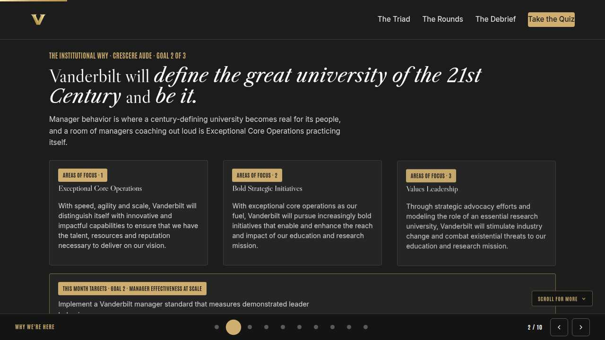
The mission Full 3 min · Core 2
Anchor the session in the Chancellor's charge so the next 40 minutes read as mission work, not admin.
Say
“This year of learning hangs off one sentence from the Chancellor: Vanderbilt will define the great university of the 21st Century and be it. Manager behavior is where a century-defining university becomes real for its people. A room of managers coaching each other out loud is Exceptional Core Operations practicing itself, one triad at a time.”
Do
- Read the mission line slowly, once.
- Point at the tie-in line and let it sit; no discussion needed here.
Transition: “That is the why. Here is the number we are moving.”
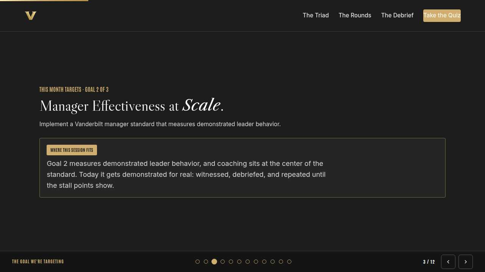
The goal we are targeting Full 3 min · Core 2
Name the enterprise goal this month serves.
Say
“Every month of Anchor's Edge lands on one of three enterprise goals. This month is Goal 2, Manager Effectiveness at Scale: Implement a Vanderbilt manager standard that measures demonstrated leader behavior. Goal 2 measures demonstrated leader behavior, and coaching sits at the center of the standard. Today it gets demonstrated for real: witnessed, debriefed, and repeated until the stall points show.”
Do
- Read the goal once, plainly.
- One line, not a lecture: this session is one of the moves that serves it.
Transition: “Here is what you will be able to do in 90 minutes.”
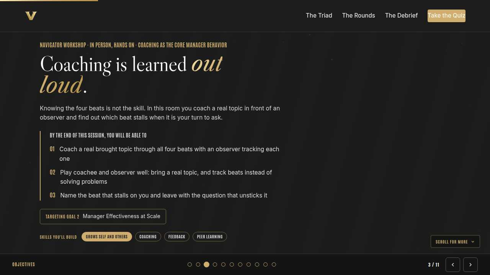
Objectives Full 2 min · Core 1
Set the contract for the session in under a minute.
Say
“By the end of this session: coach a real brought topic through all four beats with an observer tracking each one; play coachee and observer well: bring a real topic, and track beats instead of solving problems; name the beat that stalls on you and leave with the question that unsticks it. That is the whole contract.”
Do
- Read the three objectives briskly; do not elaborate yet.
Transition: “Three stops to get there.”
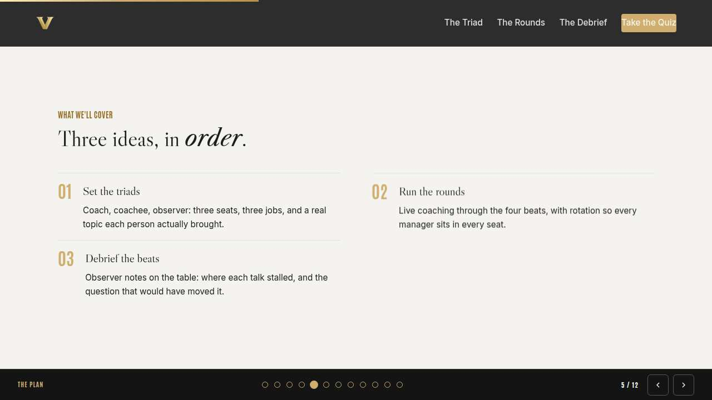
Agenda Full 2 min · Core 1
Show the path so the room can pace itself.
Say
“Three stops: set the triads, run the rounds, debrief the beats. Each one has something to play with, so keep the deck open.”
Do
- Point once at each stop; ten seconds each.
Transition: “Stop one.”
Core path: Core: skip the read-through, gesture at the slide in passing.
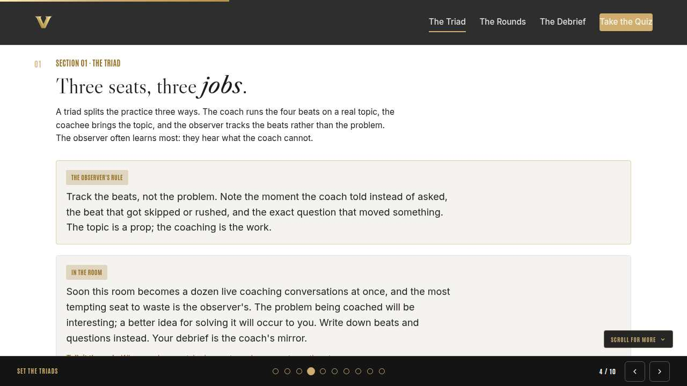
Set the triads Full 8 min · Core 6
Form working triads, load the three jobs, and get every coachee to a real, work-sized, roles-only topic said in one sentence.
Say
“This room runs on a simple bet: coaching is a physical skill, and physical skills need reps in front of someone who is watching. So, triads. The coach runs the four beats. The coachee brings a real topic, something actually stuck this month, work-sized, roles only. The observer has the strangest and best job: track the beats, not the problem. You will sit in all three seats before we are done.”
Do
- Form triads across tables so nobody coaches a close colleague; direct traffic until every triad has three seats filled.
- Show the observer's rule card and the In the room context; run the discussion on what great questions sound like. Then hand out the printed observer checklists, one per triad: the four beats, told versus asked, and a line for the question that moved something.
- Coachees write their topic in one sentence and read it to the triad. Navigators sweep for topics that are really grievances about named people; help reshape them toward the coachee's own next move.
Ask
“Coachees, is your topic real enough to matter and small enough to coach?”
Expect:
- Real project stucks and priority tangles
- A few too-big topics, like a whole reorg
- A few too-safe ones picked to stay comfortable
Respond: Too big shrinks to its next decision; too safe swaps for the thing you actually thought of first. Real topics are what make the reps count.
Debrief: Three seats, three jobs, real topics on the table. The observer tracks beats, and the checklist is their script.
Watch for: Triads forming from adjacent seats and existing teams. Break them up cheerfully; strangers make braver coachees and more honest observers.
Transition: “Seats set. Round one.”
Core path: Core: form triads by numbering off instead of choice, and skip the discussion; the checklist walkthrough carries the observer teaching.
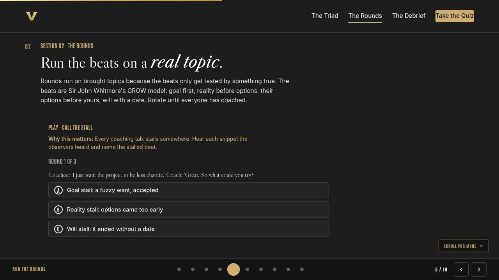
Run the rounds Full 10 min · Core 7
Run rotating live rounds through the four beats with observers writing, until every manager has coached once.
Say
“Round one starts now. Coaches: goal before options, reality before options, their options before yours, and a will with a date. Coachees: honest answers, including the uncomfortable ones. Observers: pen moving, mouth closed. When the round lands its will, rotate one seat and the next topic comes out. The room will get loud. Loud is what practice sounds like.”
Do
- Call the start and let the noise build; resist the urge to hush the room. Navigators kneel in with triads whose coach is lecturing and whisper one question stem: what have you tried?
- Between rounds, run Call the stall on learner devices; the snippets calibrate every observer's ear for the next round.
- Rotate until everyone has coached once. If a triad's round dies early, the observer reports immediately and the same pair reruns from the stalled beat; that rerun is often the best coaching of the day.
Ask
“Coaches, what surprised you about being watched?”
Expect:
- The urge to fix got louder
- Silence felt endless with an observer there
- The checklist made me hear my own questions
Respond: All of that is the practicum working. The observer's presence turns habits you cannot hear into notes you can read, which is the entire point of doing this out loud.
Debrief: Every manager coached, every talk got witnessed, and the stalls are now on paper. The debrief spends them.
Watch for: Coaches interviewing forever to avoid the will beat. Signal triads to land the round: which one will you do, and by when, is how a round ends.
Transition: “Rounds done. Now the mirror.”
Core path: Core: two rounds instead of three; whoever has not coached becomes first coach in the triad rematch, and say so out loud.
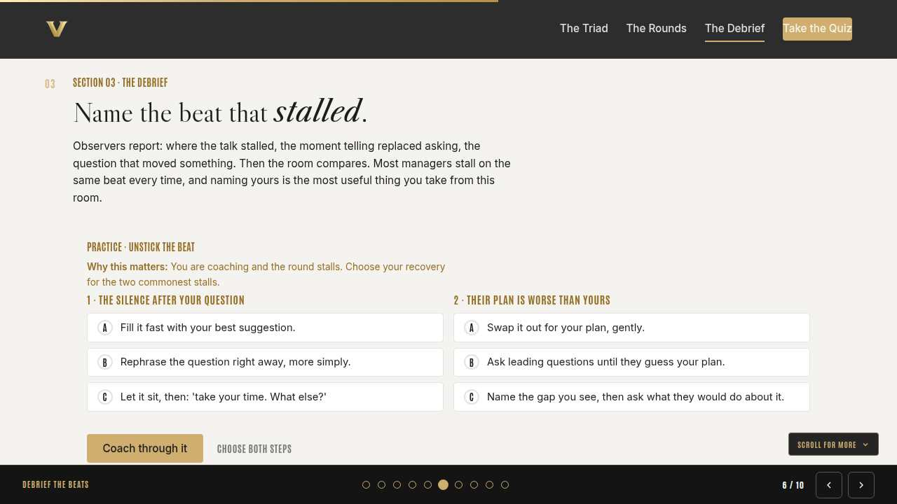
Debrief the beats Full 9 min · Core 6
Turn observer notes into named stalls and one prepared question per manager, then set up the take-home rep.
Say
“Now the part you cannot get alone at your desk: the mirror. Observers, report from your notes, kindly and specifically: where the talk stalled, the moment telling replaced asking, and the question that moved something. Coaches, listen for the pattern; most of us stall in the same place every time. Then we practice the two commonest recoveries, because knowing your stall is half, and having the next move is the other half.”
Do
- Triad debriefs first, observer speaking from the checklist. Then chart the room: each triad calls out its stalls and you tally goal, reality, options, will on the flip chart. Name the crowded column; the room's shape is always a teaching moment.
- Run Unstick the beat on learner devices; it rehearses the recoveries for the two stalls every column shares.
- Each coach writes their stalled beat and their unsticking question on a card; that pair rides straight into the capstone.
Ask
“What does our flip chart say about this room?”
Expect:
- A pile-up on will, in most rooms
- Reality rushed by the fixers
- Goal stalls from politely accepting fog
Respond: Whatever the crowded column is, that is the room's collective rep. Individually, trust your observer over your self-image; the note is the truth.
Debrief: A named stall, a written question, and a recovery for the silence and the better-plan trap. That is a complete practicum takeaway.
Watch for: Debriefs drifting into re-solving the coachee's problem. Pull them back to the beats; the topic was a prop and the coaching is the work.
Transition: “Cards ready. Make the commitment.”
Core path: Core: skip the room tally; triad debriefs only, and the stalled beat goes straight onto the capstone card.
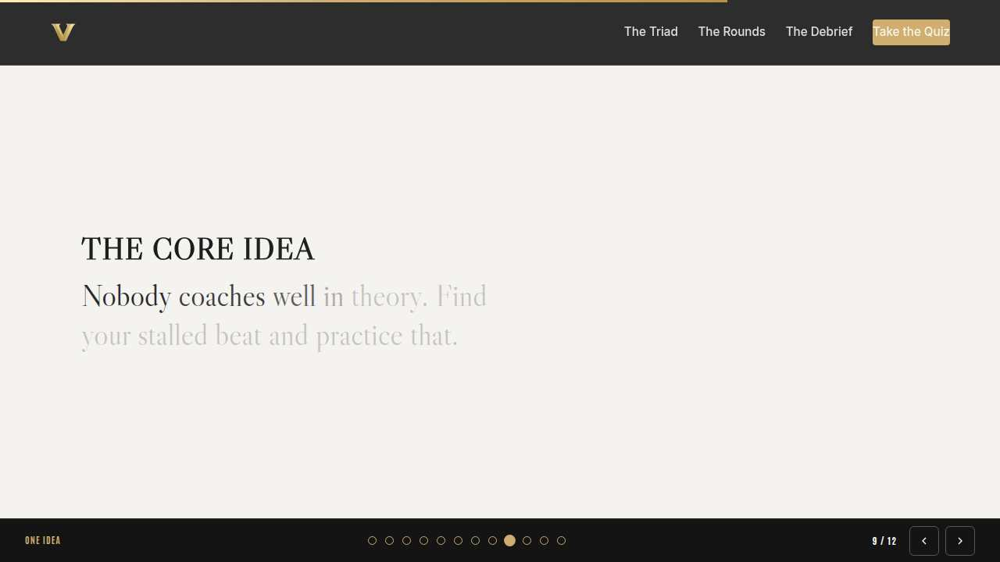
The core idea Full 2 min · Core 1
Land the one sentence the session exists to install.
Say
“If you keep one sentence from today, this is it. Read it once, out loud: Nobody coaches well in theory. Find your stalled beat and practice that.”
Do
- Pause two beats after reading; the word animation carries it.
Transition: “The recap makes it stick.”
Core path: Core: pass through in stride; the sentence reads itself.
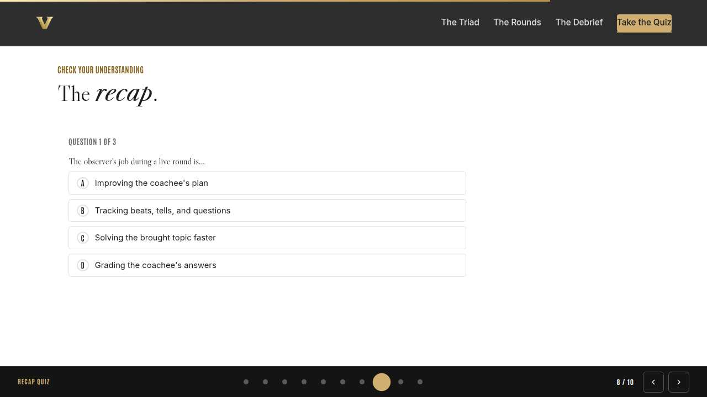
Recap quiz Full 5 min · Core 4
Score the learning while it is fresh; wrong answers are teaching moments, not failures.
Say
“Three questions, on your own screen. Answer honestly; the explanations are where the learning sticks.”
Do
- Give the room 90 seconds to run it individually.
- Ask for a show of results in chat: how many got 3 of 3?
- Read out the explanation for whichever question drew the most misses.
Watch for: Rushing past the why lines. The explanations carry the teaching.
Transition: “Now point it at your real week.”
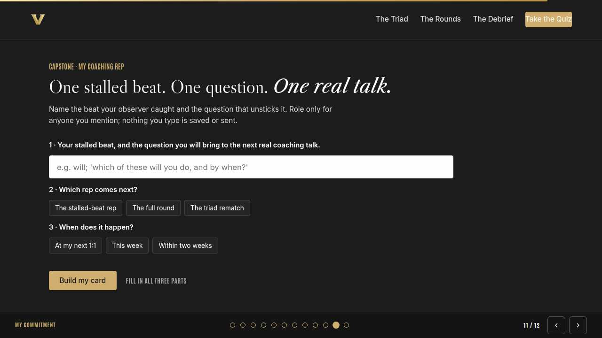
Capstone commitment Full 6 min · Core 4
Convert the session into one named, dated action per person.
Say
“Your observer gave you a finding; now it becomes a commitment. The stalled beat, the question that unsticks it, and the conversation it is for, role only. Build the card and copy it somewhere you will see it before your next 1:1. Quiet room, go.”
Do
- Two quiet minutes; everyone builds their own card.
- Invite two or three volunteers to read their card aloud or paste it in chat.
- Remind: copy the card somewhere you will see it this week.
Watch for: Vague entries. Nudge for a name-able situation and a real date.
Transition: “Last slide.”
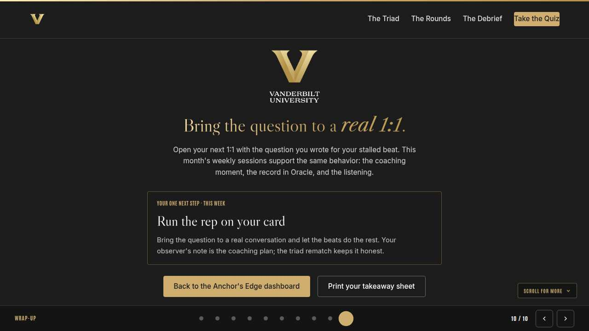
Closing Full 2 min · Core 2
End with the next step and where this thread continues.
Say
“You did the thing this month keeps asking for: you coached, out loud, with witnesses. The weekly sessions carry the theme on: Manager Monday tunes your ear for the coaching moment inside ordinary 1:1s, Take-Off Tuesday puts the growth you coach on the record in Oracle, and Thrive Thursday builds the listening underneath every beat you ran today. If you want the theory behind your reps, this month's LinkedIn Learning pick is Sara Canaday's Coaching Skills for Leaders and Managers; a companion when you are curious, never an assignment. The rep on your card is the only thing due.”
Do
- Point at the next-step card; one sentence.
- Name the rest of the week's rhythm: the other sessions echo this month's theme.
Generated from facilitator/notes.json. The on-screen facilitator edition lives at ./ alongside this guide.